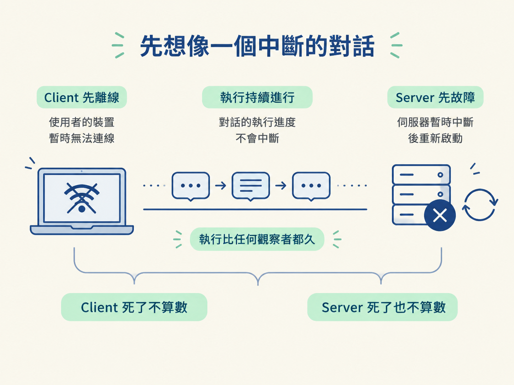

這一步要先建立一個核心判斷：什麼樣的執行，才算是 durable execution？你會用「ChatGPT 回覆到一半斷線」的情境，拆出 checkpointing、fault tolerance 與 resilience 這三個要件。
你正在和 ChatGPT 對話。模型才回覆到一半，Wi-Fi 突然斷線。幾秒後重新連上，你希望看到什麼結果？
答案很直覺：接續剛才那段對話（resume that session）。你不會希望它從頭開始，也不會希望它假裝剛才從未收到你的問題。你期待的是，對話已經被存到某個地方；斷線只是暫時看不到，執行本身並沒有消失。
再換一個情境：這次不是你的 Wi-Fi 斷了，而是 OpenAI 的 server 掛掉，之後重新啟動。你的期待仍然一樣：接續那段對話。
這兩個情境都指向同一件事：執行的存在，不該取決於有沒有人正在看它。不論是 client 先離線，還是 server 先故障，執行本身都應該繼續存活。

這類需求可以用一個詞概括：durable execution（持久化執行）。意思是，程式正在執行的工作必須「持久」存在；即使發生故障，也要具備韌性，能夠繼續或恢復。
我們在執行一段東西，而這段執行必須「持久」——要有韌性（resilient），要能容忍故障（fault tolerant）。
可以把它拆成三個具體要件：
| 要件 | 白話 | 對應前面哪個場景 |
|---|---|---|
| checkpointing（檢查點） | 定期記下「已經做到哪一步」，中斷後才知道從哪裡接回來 | 回覆到一半斷線，重新連線後知道要接續哪裡 |
| fault tolerance（故障容忍） | 即使出錯或當機，也不會讓整件工作歸零 | server 掛掉並重啟後，執行仍然能繼續 |
| resilience（韌性） | 系統發生故障後，能夠恢復並重新站起來 | 斷電或斷網後，自動回到正常狀態 |
這三個詞經常一起出現，但負責的問題不同：checkpointing 回答「進度記在哪裡」；fault tolerance 回答「壞掉時怎麼不歸零」；resilience 回答「壞掉後怎麼恢復」。三者合在一起，就是讓執行活得比任何觀察者都久。
當你要求「client 死了不算數、server 死了也不算數」，就已經進入 distributed computing（分散式運算） 的範圍：多個系統在不同的 process 上執行，彼此透過不可靠的網路溝通，也彼此依賴。
其中一台機器上的 process 死掉時，另一台機器上的結果不應該因此消失。這正是持久化執行要處理的問題。
對 agent 來說，這不是額外加分，而是能不能被放心使用的分水嶺。如果 agent 的執行綁死在某個 client 上，client 一關閉網頁或一斷線，agent 就停擺、失憶，甚至半途而廢，那它就只能停留在玩具等級。
整個持久化設計的總需求，可以先用一句話定下來：
Execution should be independent of any consumer, any client.
也就是：執行必須獨立於任何消費者與任何 client。後面三步會分別用 CI/CD 類比、冪等／exactly-once，以及 DBOS 來尋找實作方法；但它們共同要解決的，都是同一個問題：如何讓執行不依賴正在觀看或觸發它的那個人。